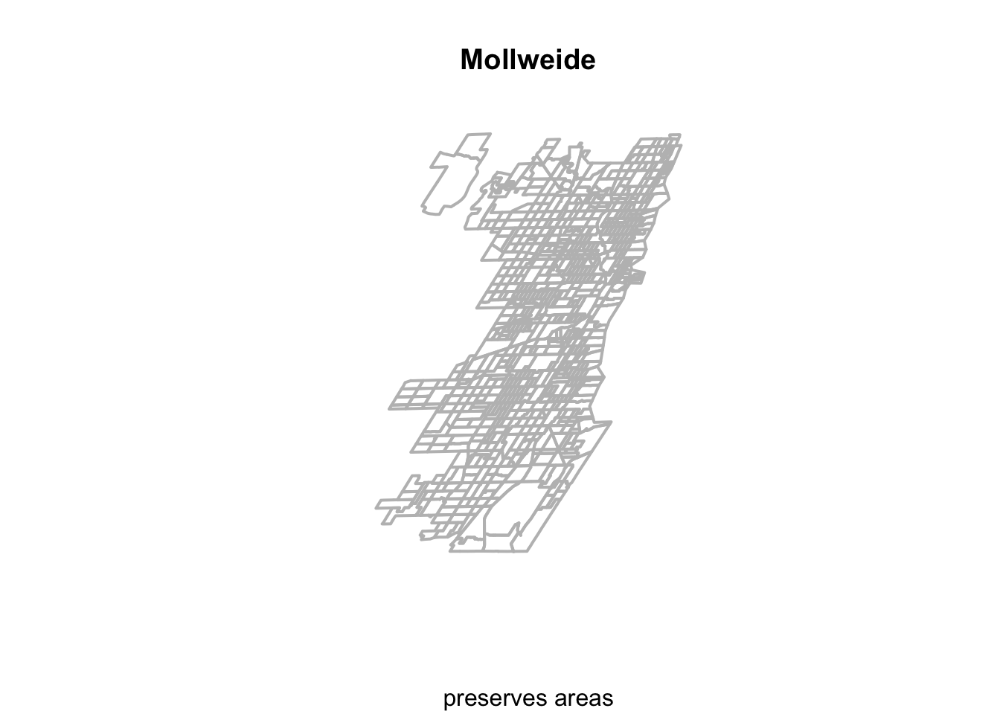
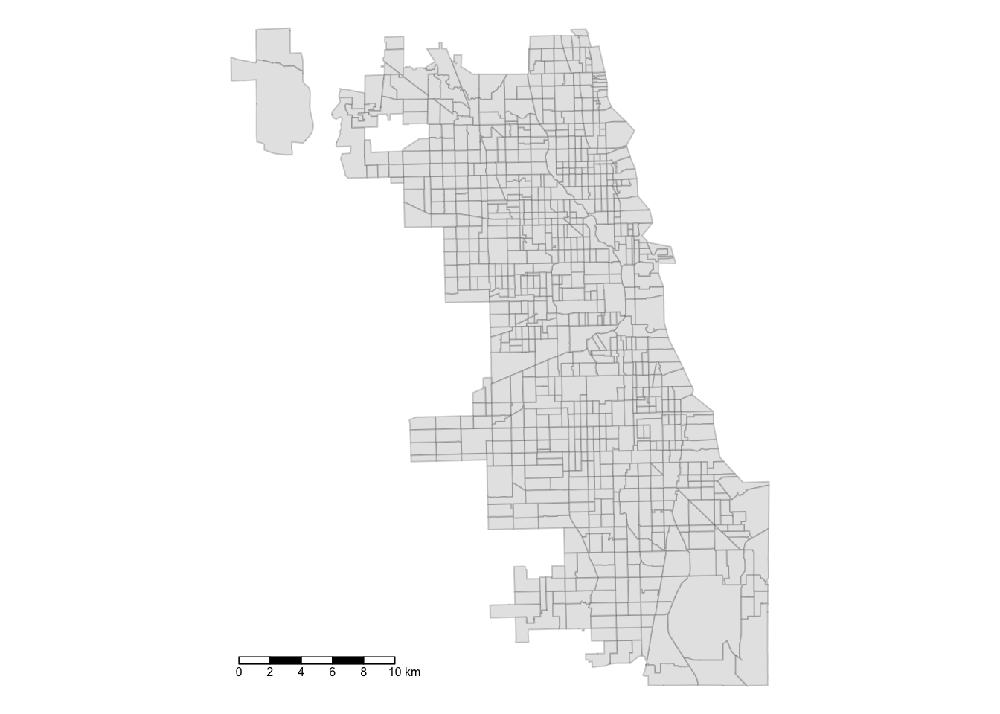
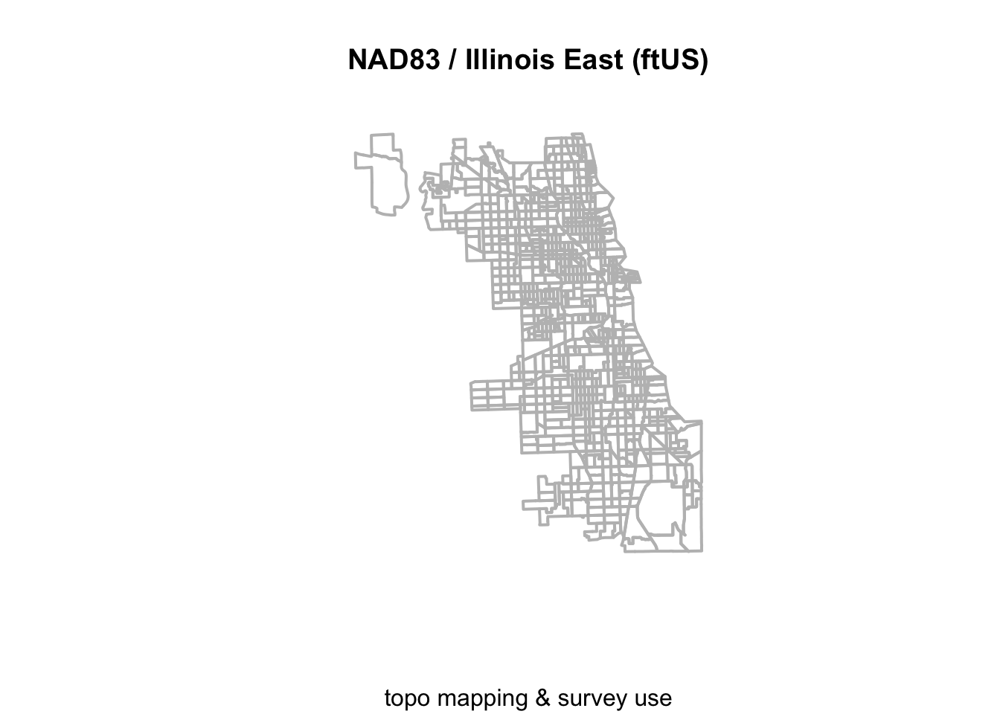

4 Calculate Spatial Metrics
While we’ve generated some nice visualizations, we need insights quantified as metrics at the neighborhood level. Don’t start this step until you have a good idea of what you need. Visualizing and exploring the data in depth is best practice.
For our purposes, we’re interested in developing spatial access metrics with a container method approach. At the end of this tutorial, we’ll generate the following new variables:
- Total number of Methadone Maintenance MOUD by zip code
- Total number of Walkble MOUD Service Areas by zip code
Plus, we will have a new spatial layer, that includes the actual service areas (ie. 1-mile buffers of MOUDs). We assume that access to MOUDs is critical and requires high regularity, and that walking is the most likely option during COVID. This guides the parameter specification of MOUD Service Areas (and is also backed up by some literature in this space, though much more is needed.)
4.1 Load Spatial Data
Let’s first reload our spatial data – this will be the MOUD points, plus the master zip code spatial file.
## Warning: package 'sf' was built under R version 3.6.2## Linking to GEOS 3.7.2, GDAL 2.4.2, PROJ 5.2.0## Reading layer `methadoneMOUD1' from data source
## `/Users/maryniakolak/code/Intro2RSpatialMed/data/methadoneMOUD1.geojson'
## using driver `GeoJSON'
## Simple feature collection with 25 features and 8 fields
## Geometry type: POINT
## Dimension: XY
## Bounding box: xmin: -87.7349 ymin: 41.68698 xmax: -87.57673 ymax: 41.9533
## CRS: 4326## Reading layer `ChiZipMaster1' from data source
## `/Users/maryniakolak/code/Intro2RSpatialMed/data/ChiZipMaster1.geojson'
## using driver `GeoJSON'
## Simple feature collection with 540 features and 31 fields
## Geometry type: MULTIPOLYGON
## Dimension: XY
## Bounding box: xmin: -87.87596 ymin: 41.64454 xmax: -87.52414 ymax: 42.02304
## CRS: 4326## Simple feature collection with 6 features and 8 fields
## Geometry type: POINT
## Dimension: XY
## Bounding box: xmin: -87.72186 ymin: 41.88474 xmax: -87.63409 ymax: 41.9533
## CRS: 4326
## X Name
## 1 3 Soft Landing Interventions/DBA Symetria Recovery of Lakeview
## 2 4 PDSSC - Chicago, Inc.
## 3 5 Center for Addictive Problems, Inc.
## 4 6 Family Guidance Centers, Inc.
## 5 7 A Rincon Family Services
## 6 8 *
## Address City State Zip
## 1 3934 N. Lincoln Ave. Chicago IL 60613
## 2 2260 N. Elston Ave. Chicago IL 60614
## 3 609 N. Wells St. Chicago IL 60654
## 4 310 W. Chicago Ave. Chicago IL 60654
## 5 3809 W. Grand Ave. Chicago IL 60651
## 6 140 N. Ashland Ave. Chicago IL 60607
## fullAdd geo_method geometry
## 1 3934 N. Lincoln Ave. Chicago IL 60613 census POINT (-87.67818 41.9533)
## 2 2260 N. Elston Ave. Chicago IL 60614 census POINT (-87.67407 41.92269)
## 3 609 N. Wells St. Chicago IL 60654 census POINT (-87.63409 41.89268)
## 4 310 W. Chicago Ave. Chicago IL 60654 census POINT (-87.63636 41.89657)
## 5 3809 W. Grand Ave. Chicago IL 60651 census POINT (-87.72186 41.90435)
## 6 140 N. Ashland Ave. Chicago IL 60607 osm POINT (-87.66725 41.88474)## Simple feature collection with 6 features and 31 fields
## Geometry type: MULTIPOLYGON
## Dimension: XY
## Bounding box: xmin: -87.63999 ymin: 41.85317 xmax: -87.60246 ymax: 41.88913
## CRS: 4326
## zip objectid shape_area shape_len Case.Rate...Cumulative year totPopE
## 1 60601 27 9166246 19804.58 1451.4 2018 14675
## 2 60602 26 4847125 14448.17 1688.1 2018 1244
## 3 60603 19 4560229 13672.68 1107.3 2018 1174
## 4 60604 48 4294902 12245.81 3964.2 2018 782
## 5 60605 20 36301276 37973.35 1420.8 2018 27519
## 6 60606 31 6766411 12040.44 2289.6 2018 3101
## whiteP blackP amIndP asianP pacIsP otherP hispP noHSP age0_4 age5_14 age15_19
## 1 74.17 5.57 0.45 18.00 0.00 1.81 8.68 0.00 550 156 907
## 2 68.17 3.78 5.31 19.45 0.00 3.30 6.51 0.00 61 87 18
## 3 63.46 3.24 0.00 27.60 0.00 5.71 9.80 0.00 13 43 179
## 4 63.43 5.63 0.00 29.67 0.00 1.28 4.35 0.00 12 7 52
## 5 61.20 17.18 0.18 16.10 0.03 5.31 5.84 2.39 837 1279 2172
## 6 72.75 2.35 0.00 18.09 0.00 6.80 6.29 0.73 57 44 0
## age20_24 age15_44 age45_49 age50_54 age55_59 age60_64 ageOv65 ageOv18
## 1 909 8726 976 1009 324 859 2075 13855
## 2 91 987 46 53 0 5 5 1095
## 3 172 684 75 47 150 50 112 1118
## 4 168 450 27 47 54 92 93 744
## 5 2282 16364 1766 1520 1824 1360 2569 25259
## 6 139 1863 213 153 168 172 431 3000
## age18_64 a15_24P und45P ovr65P disbP geometry
## 1 11780 12.37 64.27 14.14 6.4 MULTIPOLYGON (((-87.62271 4...
## 2 1090 8.76 91.24 0.40 0.2 MULTIPOLYGON (((-87.60997 4...
## 3 1006 29.90 63.03 9.54 7.3 MULTIPOLYGON (((-87.61633 4...
## 4 651 28.13 59.97 11.89 4.1 MULTIPOLYGON (((-87.63376 4...
## 5 22690 16.19 67.15 9.34 5.3 MULTIPOLYGON (((-87.62064 4...
## 6 2569 4.48 63.33 13.90 1.9 MULTIPOLYGON (((-87.63397 4...4.2 Project Data
First we need to switch to a projection that uses distance in feet or meters as a metric. We’ll use EPSG:3435 from the first tutorial. To find which EPSG was recommended, I searched “EPSG Illinois feet” and EPSG:3435 came up as a viable candidate. So, we use that for our new, projected CRS.
We may want to once again confirm they are plotting correctly:
## Warning: replacing previous import 'sf::st_make_valid' by
## 'lwgeom::st_make_valid' when loading 'tmap'
4.3 Count resources by area
One way of understanding resource inequity is by thinking about how many resources exist in a neighborhood.
First, give the points the attributes of the polygons they are in. Inspect.
## Simple feature collection with 6 features and 39 fields
## Geometry type: POINT
## Dimension: XY
## Bounding box: xmin: 1162460 ymin: 1926255 xmax: 1162460 ymax: 1926255
## CRS: EPSG:3435
## X Name
## 1 3 Soft Landing Interventions/DBA Symetria Recovery of Lakeview
## 1.1 3 Soft Landing Interventions/DBA Symetria Recovery of Lakeview
## 1.2 3 Soft Landing Interventions/DBA Symetria Recovery of Lakeview
## 1.3 3 Soft Landing Interventions/DBA Symetria Recovery of Lakeview
## 1.4 3 Soft Landing Interventions/DBA Symetria Recovery of Lakeview
## 1.5 3 Soft Landing Interventions/DBA Symetria Recovery of Lakeview
## Address City State Zip
## 1 3934 N. Lincoln Ave. Chicago IL 60613
## 1.1 3934 N. Lincoln Ave. Chicago IL 60613
## 1.2 3934 N. Lincoln Ave. Chicago IL 60613
## 1.3 3934 N. Lincoln Ave. Chicago IL 60613
## 1.4 3934 N. Lincoln Ave. Chicago IL 60613
## 1.5 3934 N. Lincoln Ave. Chicago IL 60613
## fullAdd geo_method zip objectid shape_area
## 1 3934 N. Lincoln Ave. Chicago IL 60613 census 60613 53 53990895
## 1.1 3934 N. Lincoln Ave. Chicago IL 60613 census 60613 53 53990895
## 1.2 3934 N. Lincoln Ave. Chicago IL 60613 census 60613 53 53990895
## 1.3 3934 N. Lincoln Ave. Chicago IL 60613 census 60613 53 53990895
## 1.4 3934 N. Lincoln Ave. Chicago IL 60613 census 60613 53 53990895
## 1.5 3934 N. Lincoln Ave. Chicago IL 60613 census 60613 53 53990895
## shape_len Case.Rate...Cumulative year totPopE whiteP blackP amIndP asianP
## 1 31196.32 1572.4 2018 50113 81.9 5.79 0.41 6.6
## 1.1 31196.32 1572.4 2018 50113 81.9 5.79 0.41 6.6
## 1.2 31196.32 1572.4 2018 50113 81.9 5.79 0.41 6.6
## 1.3 31196.32 1572.4 2018 50113 81.9 5.79 0.41 6.6
## 1.4 31196.32 1572.4 2018 50113 81.9 5.79 0.41 6.6
## 1.5 31196.32 1572.4 2018 50113 81.9 5.79 0.41 6.6
## pacIsP otherP hispP noHSP age0_4 age5_14 age15_19 age20_24 age15_44
## 1 0.02 5.27 11.3 3.42 2555 2633 777 5875 30790
## 1.1 0.02 5.27 11.3 3.42 2555 2633 777 5875 30790
## 1.2 0.02 5.27 11.3 3.42 2555 2633 777 5875 30790
## 1.3 0.02 5.27 11.3 3.42 2555 2633 777 5875 30790
## 1.4 0.02 5.27 11.3 3.42 2555 2633 777 5875 30790
## 1.5 0.02 5.27 11.3 3.42 2555 2633 777 5875 30790
## age45_49 age50_54 age55_59 age60_64 ageOv65 ageOv18 age18_64 a15_24P und45P
## 1 2880 2546 2412 1868 4429 44320 39891 13.27 71.79
## 1.1 2880 2546 2412 1868 4429 44320 39891 13.27 71.79
## 1.2 2880 2546 2412 1868 4429 44320 39891 13.27 71.79
## 1.3 2880 2546 2412 1868 4429 44320 39891 13.27 71.79
## 1.4 2880 2546 2412 1868 4429 44320 39891 13.27 71.79
## 1.5 2880 2546 2412 1868 4429 44320 39891 13.27 71.79
## ovr65P disbP geometry
## 1 8.84 7.2 POINT (1162460 1926255)
## 1.1 8.84 7.2 POINT (1162460 1926255)
## 1.2 8.84 7.2 POINT (1162460 1926255)
## 1.3 8.84 7.2 POINT (1162460 1926255)
## 1.4 8.84 7.2 POINT (1162460 1926255)
## 1.5 8.84 7.2 POINT (1162460 1926255)## [1] 225 404.3.1 Count # per Area
Next, count the number per area.
## Var1 Freq
## 1 60607 18
## 2 60608 9
## 3 60609 9
## 4 60613 9
## 5 60614 9
## 6 60615 9How could improve on this step if you used dplyr?
Aggregation Tip: What if you have an attribute value you’d like to aggregate? For example, average units of affordable housing facility by zip?
Try aggregate(pip$attribute, by = list(pip$geoid), mean) but build on with a tidy sensibility…
Now we can rename our attributes:
## zip MetClnc
## 1 60607 18
## 2 60608 9
## 3 60609 9
## 4 60613 9
## 5 60614 9
## 6 60615 9And finally, merge back to your master zip file:
## Simple feature collection with 6 features and 32 fields
## Geometry type: MULTIPOLYGON
## Dimension: XY
## Bounding box: xmin: 1165664 ymin: 1892290 xmax: 1174872 ymax: 1902906
## CRS: EPSG:3435
## zip objectid shape_area shape_len Case.Rate...Cumulative year totPopE
## 1 60607 29 64664294 39143.64 2504.1 2018 29591
## 2 60607 29 64664294 39143.64 2504.1 2018 29591
## 3 60607 29 64664294 39143.64 2504.1 2018 29591
## 4 60607 29 64664294 39143.64 2504.1 2018 29591
## 5 60607 29 64664294 39143.64 2504.1 2018 29591
## 6 60607 29 64664294 39143.64 2504.1 2018 29591
## whiteP blackP amIndP asianP pacIsP otherP hispP noHSP age0_4 age5_14 age15_19
## 1 58.17 14.51 0.13 22.58 0.1 4.51 8.3 3.94 1660 1392 2351
## 2 58.17 14.51 0.13 22.58 0.1 4.51 8.3 3.94 1660 1392 2351
## 3 58.17 14.51 0.13 22.58 0.1 4.51 8.3 3.94 1660 1392 2351
## 4 58.17 14.51 0.13 22.58 0.1 4.51 8.3 3.94 1660 1392 2351
## 5 58.17 14.51 0.13 22.58 0.1 4.51 8.3 3.94 1660 1392 2351
## 6 58.17 14.51 0.13 22.58 0.1 4.51 8.3 3.94 1660 1392 2351
## age20_24 age15_44 age45_49 age50_54 age55_59 age60_64 ageOv65 ageOv18
## 1 4588 20860 1392 859 1122 702 1604 26241
## 2 4588 20860 1392 859 1122 702 1604 26241
## 3 4588 20860 1392 859 1122 702 1604 26241
## 4 4588 20860 1392 859 1122 702 1604 26241
## 5 4588 20860 1392 859 1122 702 1604 26241
## 6 4588 20860 1392 859 1122 702 1604 26241
## age18_64 a15_24P und45P ovr65P disbP MetClnc geometry
## 1 24637 23.45 80.81 5.42 6.1 18 MULTIPOLYGON (((1173173 189...
## 2 24637 23.45 80.81 5.42 6.1 18 MULTIPOLYGON (((1173173 189...
## 3 24637 23.45 80.81 5.42 6.1 18 MULTIPOLYGON (((1173173 189...
## 4 24637 23.45 80.81 5.42 6.1 18 MULTIPOLYGON (((1173173 189...
## 5 24637 23.45 80.81 5.42 6.1 18 MULTIPOLYGON (((1173173 189...
## 6 24637 23.45 80.81 5.42 6.1 18 MULTIPOLYGON (((1173173 189...Quickly map to inspect:
tm_shape(areas) + tm_polygons(col = "gray90") +
tm_shape(areas) + tm_fill(col = "MetClnc", style = "jenks", alpha = 0.2) +
tm_shape(points) + tm_dots() 
4.4 Buffer Data
Next, lets create a walkable buffer of one mile, or 5280 feet, for our MOUD provider locations. Individuals residing in places outside of that walkabile area may have difficulty accessing this medication during crises, like a pandemic.
Inspect immediately:
tm_shape(areas) + tm_borders() +
tm_shape(ptbuffers) + tm_borders(col = "blue") +
tm_shape(points) + tm_dots(col = "red") 
4.5 Count buffers by area
We know that MOUD locations are accessible up to one mile away. So a total number of resources by area may be too restrictive. Let’s calculated how many walkable service areas of MOUD clinics are in each tract. Or, how many buffers are in each tract…
## [1] 0 0 0 0 0 0Stick buffer totals back to the zip master file:
## Simple feature collection with 6 features and 33 fields
## Geometry type: MULTIPOLYGON
## Dimension: XY
## Bounding box: xmin: 1165664 ymin: 1892290 xmax: 1174872 ymax: 1902906
## CRS: EPSG:3435
## zip objectid shape_area shape_len Case.Rate...Cumulative year totPopE
## 1 60607 29 64664294 39143.64 2504.1 2018 29591
## 2 60607 29 64664294 39143.64 2504.1 2018 29591
## 3 60607 29 64664294 39143.64 2504.1 2018 29591
## 4 60607 29 64664294 39143.64 2504.1 2018 29591
## 5 60607 29 64664294 39143.64 2504.1 2018 29591
## 6 60607 29 64664294 39143.64 2504.1 2018 29591
## whiteP blackP amIndP asianP pacIsP otherP hispP noHSP age0_4 age5_14 age15_19
## 1 58.17 14.51 0.13 22.58 0.1 4.51 8.3 3.94 1660 1392 2351
## 2 58.17 14.51 0.13 22.58 0.1 4.51 8.3 3.94 1660 1392 2351
## 3 58.17 14.51 0.13 22.58 0.1 4.51 8.3 3.94 1660 1392 2351
## 4 58.17 14.51 0.13 22.58 0.1 4.51 8.3 3.94 1660 1392 2351
## 5 58.17 14.51 0.13 22.58 0.1 4.51 8.3 3.94 1660 1392 2351
## 6 58.17 14.51 0.13 22.58 0.1 4.51 8.3 3.94 1660 1392 2351
## age20_24 age15_44 age45_49 age50_54 age55_59 age60_64 ageOv65 ageOv18
## 1 4588 20860 1392 859 1122 702 1604 26241
## 2 4588 20860 1392 859 1122 702 1604 26241
## 3 4588 20860 1392 859 1122 702 1604 26241
## 4 4588 20860 1392 859 1122 702 1604 26241
## 5 4588 20860 1392 859 1122 702 1604 26241
## 6 4588 20860 1392 859 1122 702 1604 26241
## age18_64 a15_24P und45P ovr65P disbP MetClnc bufferct
## 1 24637 23.45 80.81 5.42 6.1 18 0
## 2 24637 23.45 80.81 5.42 6.1 18 0
## 3 24637 23.45 80.81 5.42 6.1 18 0
## 4 24637 23.45 80.81 5.42 6.1 18 0
## 5 24637 23.45 80.81 5.42 6.1 18 0
## 6 24637 23.45 80.81 5.42 6.1 18 0
## geometry
## 1 MULTIPOLYGON (((1173173 189...
## 2 MULTIPOLYGON (((1173173 189...
## 3 MULTIPOLYGON (((1173173 189...
## 4 MULTIPOLYGON (((1173173 189...
## 5 MULTIPOLYGON (((1173173 189...
## 6 MULTIPOLYGON (((1173173 189...Map density of buffers per census area:

4.6 Integrate & Explore
Let’s review: our master area file now has total number resources by zip and total number of walkable service areas by zip.
Using your new spatial file, see if you can answer some of these quetions using various queries:
Which zip codes have high rates of COVID and are not within a walking distance of a methadone MOUD?
Which zip codes have worse access to affordable rental units, low educational rates, and less walkable access to MOUDs?
What is the demographic and racial/ethnic characteristics of areas most vulnerable to high COVID rates in September 2020?
Generate different maps and outputs to drive your thinking and defend your hypothesis formation.